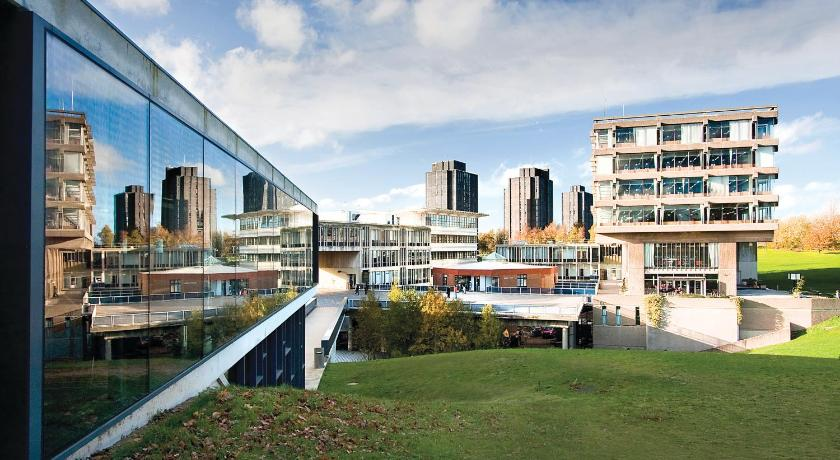

This App can be used to investigate policing in Colchester, particularly Colchester Town and the University areas.
This app analyzes the demographics of stop and search, arrests and other forms of policing .
why?: as important as it is to know where crime happens, it is just as vital to know if the police are discriminating against certain areas and certain people.
Areas Covered?: Greenstead, Wivenhoe, Colchester Town, University